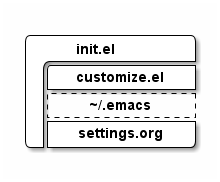

NobbZ-Emacs Configuration
Table of Contents
- 1. Foreword
- 2. Helpers
- 3. Packages
- 4. TODO Security
- 5. Appearance, UI Elements, and the Emacs server
- 6. Encoding
- 7. Pathes
- 8. Window Movement
- 9. Debugging
- 10. Whitespace
- 11. TODO Dired
- 12. Org-Mode
1 Foreword
A properly rendered version of this document is available at the following places:
This file is massively inspired/shamelessely stolen from the one shown at https://ogbe.net/emacsconfig.html
Before this file is actually loaded the following init.el is
executed.
;; NobbZ init.el
;; Real stuff happens in =settings.org=
(require 'package)
(setq package-archives
'(("gnu" . "http://elpa.gnu.org/packages/")
("melpa" . "http://melpa.org/packages/")
("org" . "http://orgmode.org/elpa/")))
(when (boundp 'package-pinned-packages)
(setq package-pinned-packages
'((org . "org"))))
(package-initialize)
(package-refresh-contents)
(unless (package-installed-p 'use-package)
(package-install 'use-package))
(eval-when-compile
(require 'use-package))
;; Set the load path
(setq dot-emacs-d-basedir (file-name-directory load-file-name))
(add-to-list 'load-path (concat dot-emacs-d-basedir "lisp/"))
(add-to-list 'load-path (concat dot-emacs-d-basedir "vendor/org/lisp") t)
(add-to-list 'load-path (concat dot-emacs-d-basedir "vendor/org/contrib/lisp") t)
;; Moved all the custom.el stuff into its own file called
;; =~/.emacs.d/customize.el=
(setq custom-file (concat dot-emacs-d-basedir "customize.el"))
(load custom-file)
(setq hostname
(replace-regexp-in-string "\\`[ \t\n]*" ""
(replace-regexp-in-string "[ \t\n]*\\'" ""
(shell-command-to-string "hostname"))))
(require 'org)
(setq org-ditaa-jar-path (concat dot-emacs-d-basedir "vendor/org/contrib/scripts/ditaa.jar"))
(defface org-block-begin-line
'((t (:foreground "#99968b" :background "#303030")))
"Face used for line delimiting the begin of source blocks.")
(defface org-block-end-line
'((t (:foreground "#99968b" :background "#303030")))
"Face used for line delimiting the end of source blocks.")
(org-babel-load-file (concat dot-emacs-d-basedir "settings.org"))
Also as you can see in the file above, I am using a dedicated file for customized variables. This file has the following content.
(custom-set-variables
;; custom-set-variables was added by Custom.
;; If you edit it by hand, you could mess it up, so be careful.
;; Your init file should contain only one such instance.
;; If there is more than one, they won't work right.
'(package-selected-packages
(quote
(lfe-mode editorconfig company-go go-mode caml alchemist elixir-mode f s helm-idris idris-mode edts erlang helm markdown-mode+ markdown-mode framemove haskell-mode puppet-mode project-explorer company which-key use-package))))
(custom-set-faces
;; custom-set-faces was added by Custom.
;; If you edit it by hand, you could mess it up, so be careful.
;; Your init file should contain only one such instance.
;; If there is more than one, they won't work right.
)
The structure of the loading sequence as it is today can be seen in figure 1, while the planned way to load can be found in figure 2.

Figure 1: Current file loading structure

Figure 2: Planned file loading structure
2 Helpers
Small little helpers which make it easier to live-reload the config:
(defun reload-settings () (interactive) (org-babel-load-file "~/.emacs.d/settings.org")) (defun settings () (interactive) (find-file "~/.emacs.d/settings.org"))
3 Packages
(setq package-list '(use-package framemove htmlize))
;; (unless package-archive-contents
;; (package-refresh-contents))
(package-refresh-contents)
(dolist (package package-list)
(unless (package-installed-p package)
(package-install package)))
(use-package framemove)
3.1 which-key
which-key provides a minor mode, that displays the key bindings
following your currently entered incomplete command in a pop up.
3.1.1 Install and load
(unless (package-installed-p 'which-key) (package-install 'which-key)) (require 'which-key) (which-key-mode)
3.1.2 Configuration
1 second is a very long delay, I do think that about a tenth of a second is enough.
(setq which-key-idle-delay 0.1)
3.1.3 Key-chords
which-key does not have any key-chords on its own, but I will enter
some global stuff here.
(which-key-add-key-based-replacements "C-x C-f" "Open file" "C-x C-s" "Save file")
3.2 helm
helm is an emacs framework for incremental completions and narrowing
selections. It helps to rapidly complete file names, buffer names, or
any other emacs interactions requiring selecting an item from a list
of possible choices.
3.2.1 Innstall and load
(unless (package-installed-p 'helm) (package-install 'helm)) (require 'helm-config) (require 'helm)
3.2.2 TODO Configuration
- Size
Per default the helm-buffer takes quite a large portion of the screen estate, therefore we reduce the size and make it resize automatically as the amount of matches narrows down.
(helm-autoresize-mode) (setq helm-autoresize-max-height 33) ; take 33% of the screen at most (setq helm-autoresize-min-height 1) ; get as small as necessary
3.2.3 TODO Keybindings
(global-set-key (kbd "M-x") 'helm-M-x) (global-set-key (kbd "C-x C-f") 'helm-find-files) (global-set-key (kbd "C-x C-b") 'helm-buffers-list)
3.3 company-mode
company-mode is a text completion framework for Emacs.
3.3.1 Install and load
(unless (package-installed-p 'company) (package-install 'company)) (require 'company) (add-hook 'after-init-hook 'global-company-mode)
3.3.2 TODO Configuration
3.3.3 TODO Key-chords
3.4 project-explorer
project-explorer is a tree explorer.
3.4.1 Install and load
We are only allowed to load project-explorer when in interactive mode.
(unless (package-installed-p 'project-explorer) (package-install 'project-explorer)) (unless noninteractive (require 'project-explorer))
3.4.2 Configuration
There is nothing special to configure right now.
3.4.3 TODO Key-chords
Toggle the explorer.
(global-set-key (kbd "C-c p e") 'project-explorer-toggle)
Also we do need to update the descriptions in =which-key=s dialog.
(which-key-add-key-based-replacements "C-c p" "Project-Explorer" "C-c p e" "Toggle PE")
3.5 Puppet-Mode
puppet-mode does provide syntax-highlighting, alignemt and
navigation for puppet-code.
3.5.1 Install and load
(unless (package-installed-p 'puppet-mode) (package-install 'puppet-mode))
Also we want to open Puppetfile=s in =ruby-mode.
(add-to-list
'auto-mode-alist '("\\`Puppetfile\\'" . ruby-mode))
3.5.2 Configuration
We need to alter the puppet-lint-command a bit to have it actually
work in our projects.
(setq puppet-lint-command "puppet-lint --no-autoloader_layout-check --with-context --log-format \"%{path}:%{line}: %{kind}: %{message} (%{check})\"")
3.5.3 Key-Chords
(which-key-add-major-mode-key-based-replacements 'puppet-mode "C-c C-a" "Align parameters" "C-c C-'" "Toggle quoting" "C-c C-;" "Blank string" "C-c C-j" "Jump to" "C-c C-c" "dry-run" "C-c C-v" "Validate syntax" "C-c C-l" "Check semantic")
3.6 haskell-mode
haskell-mode does provide syntax-highlighting, alignment and
navigation for haskell source code.
3.6.1 Install and load
(unless (package-installed-p 'haskell-mode) (package-install 'haskell-mode))
3.7 lfe-mode
lfe-mode is used to highlight and complete lfe-files. It is
currently not available at any repository, so it is delivered with
this settings-file.
3.7.1 Install and load
; (defvar lfe-mode-dir "~/.emacs.d/vendor/lfe") ; (add-to-list 'load-path lfe-mode-dir) (unless (package-installed-p 'lfe-mode) (package-install 'lfe-mode)) ; (require 'lfe-start)
3.8 alchemist
Elixir Tooling Integration Into Emacs.
https://github.com/tonini/alchemist.el
ATTENTION: We do need to make sure, that nothing in this section
is done, when we do not have emacs 24.4 or later!
3.8.1 Install and load
(unless (package-installed-p 'alchemist) (package-install 'alchemist))
3.8.2 TODO Configuration
3.8.3 TODO Keybindings
Currently all keybindings used by alchemist do violate emacs
keybinding conventions.
A bug has been reported: https://github.com/tonini/alchemist.el/issues/246
And in the meantime it was closed (by me) in favor of the older https://github.com/tonini/alchemist.el/issues/229.
Until it got fixed, I won't configure any further key-bindings.
3.9 go-mode
This is go-mode, the Emacs mode for editing Go code.
3.9.1 Install and load
(unless (package-installed-p 'go-mode) (package-install 'go-mode)) (unless (package-installed-p 'company-go) (package-install 'company-go)) (require 'company-go) ;; perhaps as an hook for go-mode?
3.9.2 TODO Configuration
3.9.3 TODO Keybindings
4 TODO Security
5 Appearance, UI Elements, and the Emacs server
First start a server and then set some important appearance
settings. Note that some of the settings are in init.el.
5.1 The server
Start the server if not already running.
(load "server") (unless (server-running-p) (server-start))
When connected to a server using emacsclient, we want to kill the
client using C-x k, the way it seems natural.
(add-hook 'server-switch-hook
(lambda ()
(when (current-local-map)
(use-local-map (copy-keymap (current-local-map))))
(local-set-key (kbd "C-x k") 'server-edit)))
5.2 Appearance
5.2.1 Theme & Faces
(load-theme 'wheatgrass) ;; A nice dark theme (set-face-attribute 'default nil :height 100) ;; 10pt font height ;; (set-face-attribute 'default nil :family "Consolas") (set-face-attribute 'fringe nil :background "#2d2d2d") (set-face-attribute 'font-lock-comment-face nil :slant 'italic :weight 'semibold) ;; (set-fontset-font "fontset-default" 'unicode "DejaVu Sans Mono for Powerline") (global-hl-line-mode t)
We want to use FiraCode if possible by any means.
(when (window-system)
(set-default-font "Fira Code"))
;; (let ((alist '((33 . ".\\(?:\\(?:==\\|!!\\)\\|[!=]\\)")
;; (35 . ".\\(?:###\\|##\\|_(\\|[#(?[_{]\\)")
;; (36 . ".\\(?:>\\)")
;; (37 . ".\\(?:\\(?:%%\\)\\|%\\)")
;; (38 . ".\\(?:\\(?:&&\\)\\|&\\)")
;; (42 . ".\\(?:\\(?:\\*\\*/\\)\\|\\(?:\\*[*/]\\)\\|[*/>]\\)")
;; (43 . ".\\(?:\\(?:\\+\\+\\)\\|[+>]\\)")
;; (45 . ".\\(?:\\(?:-[>-]\\|<<\\|>>\\)\\|[<>}~-]\\)")
;; (46 . ".\\(?:\\(?:\\.[.<]\\)\\|[.=-]\\)")
;; (47 . ".\\(?:\\(?:\\*\\*\\|//\\|==\\)\\|[*/=>]\\)")
;; (48 . ".\\(?:x[a-zA-Z]\\)")
;; (58 . ".\\(?:::\\|[:=]\\)")
;; (59 . ".\\(?:;;\\|;\\)")
;; (60 . ".\\(?:\\(?:!--\\)\\|\\(?:~~\\|->\\|\\$>\\|\\*>\\|\\+>\\|--\\|<[<=-]\\|=[<=>]\\||>\\)\\|[*$+~/<=>|-]\\)")
;; (61 . ".\\(?:\\(?:/=\\|:=\\|<<\\|=[=>]\\|>>\\)\\|[<=>~]\\)")
;; (62 . ".\\(?:\\(?:=>\\|>[=>-]\\)\\|[=>-]\\)")
;; (63 . ".\\(?:\\(\\?\\?\\)\\|[:=?]\\)")
;; (91 . ".\\(?:]\\)")
;; (92 . ".\\(?:\\(?:\\\\\\\\\\)\\|\\\\\\)")
;; (94 . ".\\(?:=\\)")
;; (119 . ".\\(?:ww\\)")
;; (123 . ".\\(?:-\\)")
;; (124 . ".\\(?:\\(?:|[=|]\\)\\|[=>|]\\)")
;; (126 . ".\\(?:~>\\|~~\\|[>=@~-]\\)"))))
;; (dolist (char-regexp alist)
;; (set-char-table-range composition-function-table
;; (car char-regexp)
;; `([,(cdr char-regexp) 0 font-shape-gstring]))))
5.2.2 UI Elements
Get rid of that ugly disturbing stuff no one needs…
(menu-bar-mode -1) (when (display-graphic-p) (tool-bar-mode -1) (scroll-bar-mode -1))
5.2.3 Welcome Screen
We also want to get rid of the splash screen and start into home directory.
(setq inhibit-startup-message t) (setq inhibit-splash-screen t) (setq initial-scratch-message nil)
5.2.4 TODO Window Geometry
5.2.5 TODO Scrolling
I need to find out how to let emacs behave as with spacemacs
smoothscrolling setting.
6 Encoding
Most of the time I want to have UTF-8 as my file encoding.
(set-language-environment "UTF-8")
7 Pathes
7.1 Autosave and Backup
Autosaves directly beneath the edited files do clutter up the
sourcetree. Instead let's throw them inside ~/tmp/.
(defvar backup-dir (expand-file-name "~/tmp/emacs_backup/"))
(defvar autosave-dir (expand-file-name "~/tmp/emacs_autosave/"))
(setq backup-directory-alist (list (cons ".*" backup-dir)))
(setq auto-save-list-file-prefix autosave-dir)
(setq auto-save-file-name-transforms `((".*" ,autosave-dir t)))
(setq tramp-backup-directory-alist backup-directory-alist)
(setq tramp-auto-save-directory autosave-dir)
7.2 TODO Dropbox
We need to know the basepath of dropbox.
The current function to read the path from dropbox' config is very
ugly and needs some care to make it more beautiful.
(require 'json)
(defun find-dropbox-folder ()
(interactive)
(let ((json-path (if (eq system-type 'gnu/linux)
(expand-file-name "~/.dropbox/info.json")
(concat (getenv "APPDATA") "\\..\\Local\\Dropbox\\info.json"))))
(cdr (assoc 'path (car (json-read-file json-path))))))
(defvar dropbox-base-path (find-dropbox-folder))
8 Window Movement
Use Shift-<Arrow> to navigate through windows.
(unless (package-installed-p 'framemove) (package-install 'framemove)) (require 'framemove) (windmove-default-keybindings) (setq framemove-hook-into-windmove t)
9 Debugging
Setup some keys to make it easier to use GUD.
(global-set-key (kbd "<f7>") 'gud-cont) (global-set-key (kbd "<f6>") 'gud-step) (global-set-key (kbd "<f5>") 'gud-next) (global-set-key (kbd "<f8>") 'gud-finish)
10 Whitespace
We want to see trailing whitespace, since it is the devil.
(require 'whitespace) (setq-default show-trailing-whitespace t) (global-whitespace-mode) (setq-default indent-tabs-mode nil)
10.1 But do not display in some modes
(defun no-trailing-whitespace () (setq show-trailing-whitespace nil))
Add a line for each mode:
(add-hook 'buffer-mode-hook 'no-trailing-whitespace)
(add-hook 'minibuffer-setup-hook 'no-trailing-whitespace) (add-hook 'term-mode-hook 'no-trailing-whitespace)
11 TODO Dired
11.1 General Settings
The dirst two lines stop dired from asking me if I really want to recursively delete/copy directories. I never answer "no" to that question.
The other lines enable "Do What I Mean" mode for dired, using the other buffers location as target when copying in split-screen mode.
(setq dired-recursive-copies 'always) (setq dired-recursive-deletes 'always) (setq dired-dwim-target t) (setq dired-listing-switches "-alh")
12 Org-Mode
org-mode might be THE killer app for emacs.
12.1 Installation
(use-package org :ensure t :defer t :pin org)
12.2 General settings
Some general settings for org.
(require 'org) (setq-default org-return-follows-link t org-image-actual-width '(400) org-highlight-latex-and-related '(latex script entities)) (add-hook 'org-mode-hook 'turn-on-auto-fill)
12.3 Allow execution of src-blocks
First we need an empty list
(setq nobbz-babel-languages-alist '())
12.3.1 \LaTeX
(require 'ob-latex) (add-to-list 'nobbz-babel-languages-alist '(latex . t))
12.3.2 Emacs-Lisp
(add-to-list 'nobbz-babel-languages-alist '(emacs-lisp . t))
12.3.3 Ditaa
(add-to-list 'nobbz-babel-languages-alist '(ditaa . t))
12.3.4 Applying the stuff
(org-babel-do-load-languages 'org-babel-load-languages nobbz-babel-languages-alist)

12.3.5 Execution security
(defun nobbz-org-confirm-babel-evaluate (lang body) (not (string= lang "ditaa"))) ; don't ask for ditaa (setq org-confirm-babel-evaluate 'nobbz-org-confirm-babel-evaluate)
12.4 Syntax-Highlighting in sourceblocks
This is a very important feature in an org-document. Also adds native
<tab> behaviour in those blocks.
(setq org-src-fontify-natively t org-src-tab-acts-natively t)
12.5 HTML Export
There shall be a custom stylesheet for HTML export.
(require 'ox-html) (setq org-html-htmlize-output-type 'inline-css)
12.6 PDF-Export
Use minted as a highlighter.
(require 'ox-latex)
(add-to-list 'org-latex-packages-alist '("" "minted"))
(setq org-latex-listings 'minted)
Also we want to use latexmk as the build-manager and lualatex as
the engine.
(setq org-latex-pdf-process
'("latexmk -lualatex -f -shell-escape %f"))
12.7 Agenda
We want to have this file itself on our agenda.
(setq org-default-notes-file (concat dropbox-base-path "/Dokumente/org/TODO.org")) (add-to-list 'org-agenda-files (concat dropbox-base-path "/Dokumente/org/TODO.org")) (add-to-list 'org-agenda-files "~/.emacs.d/settings.org")
Also, we do need to have some additional convinience functions which help to find the various agenda related files.
(defun open-todo () (interactive) (find-file (concat dropbox-base-path "/Dokumente/org/TODO.org"))) (defun open-timing () (interactive) (find-file (concat dropbox-base-path "/Dokumente/org/time-sheet.org")))